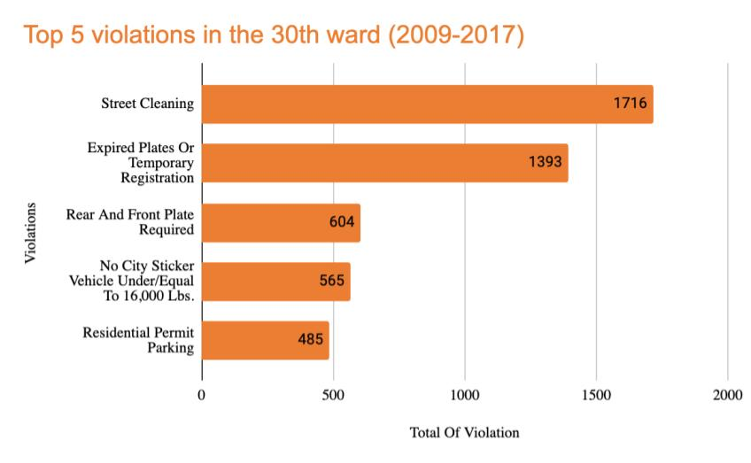
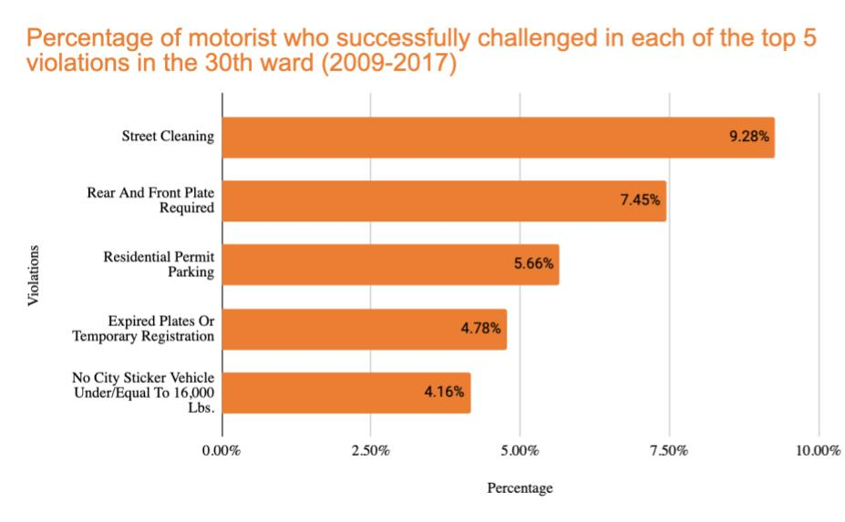
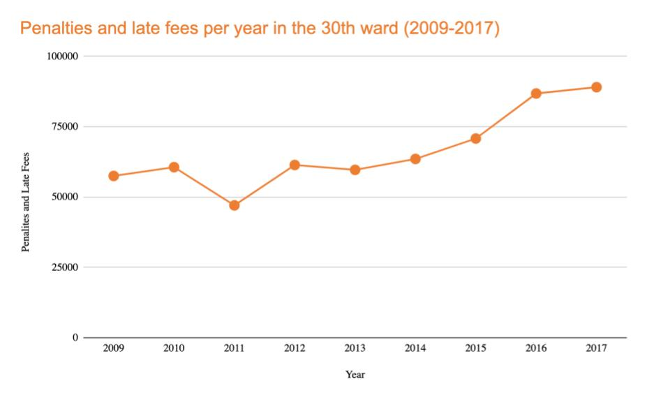
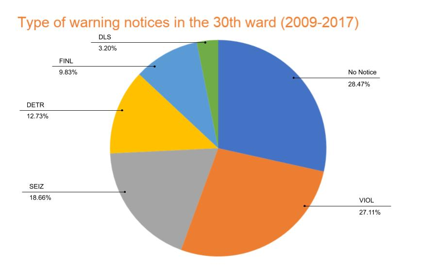
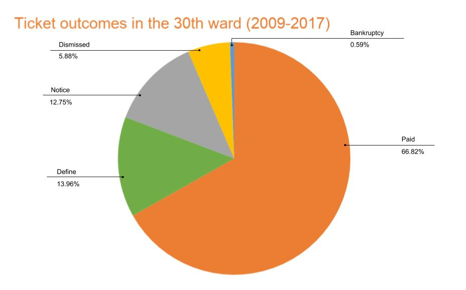

Statistics
The following sets of data are based on ticket violations committed during 2009-2017. It is evident that the 30th Ward has concerning trends of violations and successful court cases. We would like to present the following data in hopes of encouraging you to take the leap in contesting your ticket.
Illustrations
Figure 1: Shown are the most common violations residents get ticketed for in the 30th ward.
Figure 2: Shown are the percentage of motorists who have successfully challenged their tickets for the top 5 violations. It is evident that each violation has only been contested less than 10 percent of the time.
Figure 3: Shown is the increase in the amount due in just penalties and late fees per year from 2009 to 2007. It is evident that residents are having to pay more in fees than ever before.
Figure 4: Shown are the types of notices residents have received, and are defined are followed: (1) VIOL: notice of violation was sent (2) SEIZ: vehicle is on the city’s boot list (3) DETR: hearing officer found the vehicle owner was found liable for the citation (4) FINL: indicates the unpaid ticket was sent to collections (5) DLS: city intends to seek a license suspension. If no action is taken within 7 days of issue ticket take, residents will continue to go up in severity of notice levels which is a recurring issue of the 30th ward.
Figure 5: Shown are the types of outcomes for ticket, which are defined as the following: (1) Paid: if the ticket was paid (2) Dismissed: if the ticket was dismissed (3) Hearing Req: if the ticket was contested and awaiting a hearing at the time (4) Notice: if the ticket was not yet paid and the city sent a notice to the address (5) Court: if the ticket is involved in some sort of court case, not including bankruptcy (6) Bankruptcy: if the ticket was unpaid and included as a debt in a consumer bankruptcy case (7) Define: if the city cannot identify the vehicle owner.